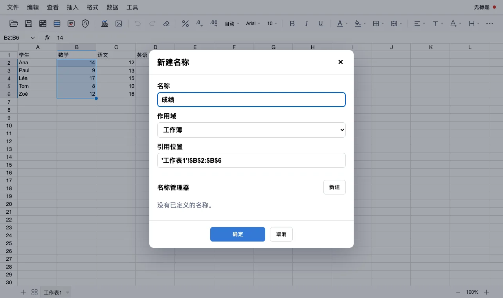

命名区域
命名
- 选择单元格或区域。
- 右键 › 定义名称…（或名称框的箭头 › 名称管理器）。
- 键入名称，选择范围，确定。

| 字段 | 内容 |
|---|---|
| 名称 | 以字母或 _ 开头；字母、数字、_ 和 .，无空格；不能是 B2 这样的地址 |
| 作用域 | 工作簿：所有工作表都可读取；某张工作表：仅该表可读取，并优先于工作簿的同名名称 |
| 引用位置 | 单元格或区域，带工作表：'工作表1'!$B$2:$B$6 |
使用名称
=AVERAGE(成绩)
=价格*(1+税率)- 名称框的箭头列出名称：选择一个即选中其所在工作表中的区域。
- 当选区恰好是命名区域时，名称框显示其名称。
- 下拉列表可读取由地址指定的单元格区域。
修改、删除
在 名称管理器 中，单击名称可重新编辑其字段；删除 删除它；新建 回到空名称。删除名称前，请替换读取它的公式：它们会保留最后的值，之后不再计算。
名称保存在 Excel 文件中，并可从中读取。